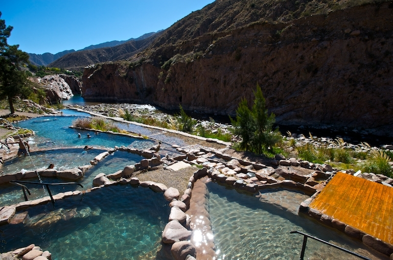
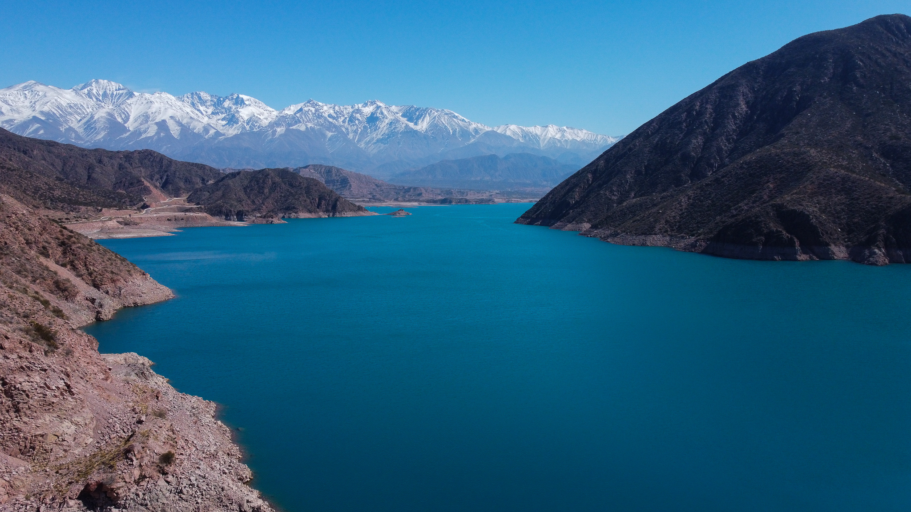
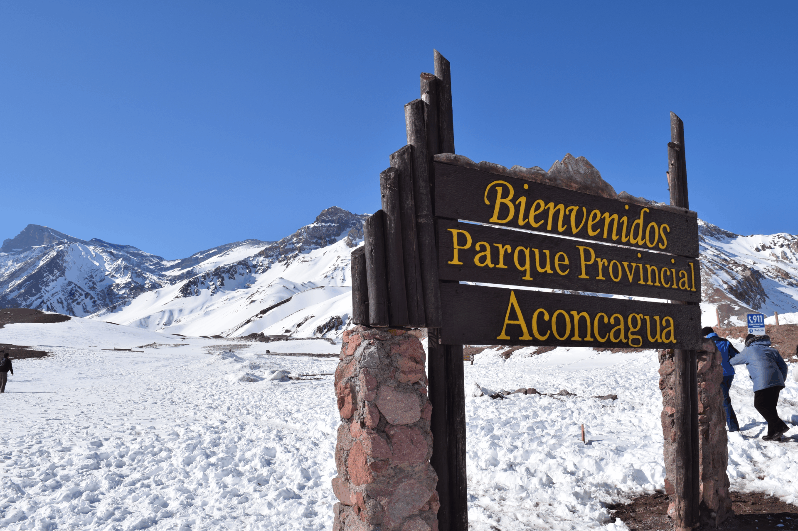
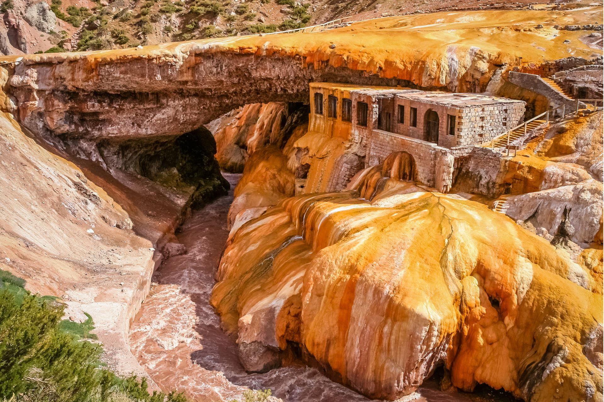

En ésta sección encontrarás algunos de los destinos más elegidos de Mendoza
Wine Route Travels te lleva a conocer los lugares más atractivos de nuestra hermosa provincia
¡Esperamos que el siguiente contenido pueda ayudarte a elegir tu próximo destino!
Termas de Cacheuta
Un lugar hermoso lugar, rodeado de montañas lleno de belleza y agradables sensaciones, el Parque de agua termal y el parque aventura causan asombro desde la primera impresión.
Si buscás descanso y distensión este es el lugar indicado, no obstante también la diversión y la adrenalina se encuentran en este oasis, situado en la provincia de Mendoza.

Más información aquí
Dique Potrerillos
Lugar único y exclusivo donde la montaña, el sol y la paz conviven en armonía...
Potrerillos se caracteriza por su propuesta de descanso, la serenidad y la amplia oferta de actividades recreativas y deportivas, centradas principalmente en el espectacular dique y su majestuoso espejo de agua.
Paisajes incomparables trazados por valles y quebradas, la paz y tranquilidad se encuentran en su máxima expresión en este hermoso lugar.

Más información aquí
Parque Provincial Aconcagua
¡Uno de los paisajes más imponentes de toda la Argentina!
El Cerro Aconcagua se alza en el extremo noroeste de Mendoza, con sus 6.959 metros sobre el nivel del mar en la cumbre norte y sus 6930 en la cumbre sur, ganándose el calificativo de "la montaña más alta de América".
Atractivo, soberbio y desafiante, este pico es protegido por el Parque Provincial homónimo, el cual incorpora a los itinerarios turísticos incomparables bellezas y perspectivas.

Más información aquí
Puente del Inca
Místico y deslumbrante, el reconocido Puente del Inca arrastra una historia plena de leyendas que intentan explicar su extraña formación. Situado en la Cordillera de Los Andes, en el noroeste de la provincia de Mendoza, este puente rocoso resguarda numerosas vertientes naturales por donde surgen aguas curativas de entre 34 y 38 grados centígrados.

Más información aquí
San Rafael
El departamento de San Rafel es conocido por su cantidad de pasaijes y atractivos turísticos para disfrutar, entre los que encontramos por ejemplo el circuito cañón del diamante y cañón del atuel, hotel termal el sosneado, las salinas del diamante y muchos más
 Más información aquí
Más información aquí
Visitas y/o degustación en bodegas
En el corazón de Mendoza, en medio de maravillosos paisajes, cada bodega invita a los visitantes a vivir experiencias totalmente distintas.
La variedad y cantidad de bodegas para que disfrutes con las que cuenta nuestra provincia va más allá de la imaginación de cualquier visitante..
Más información aquí